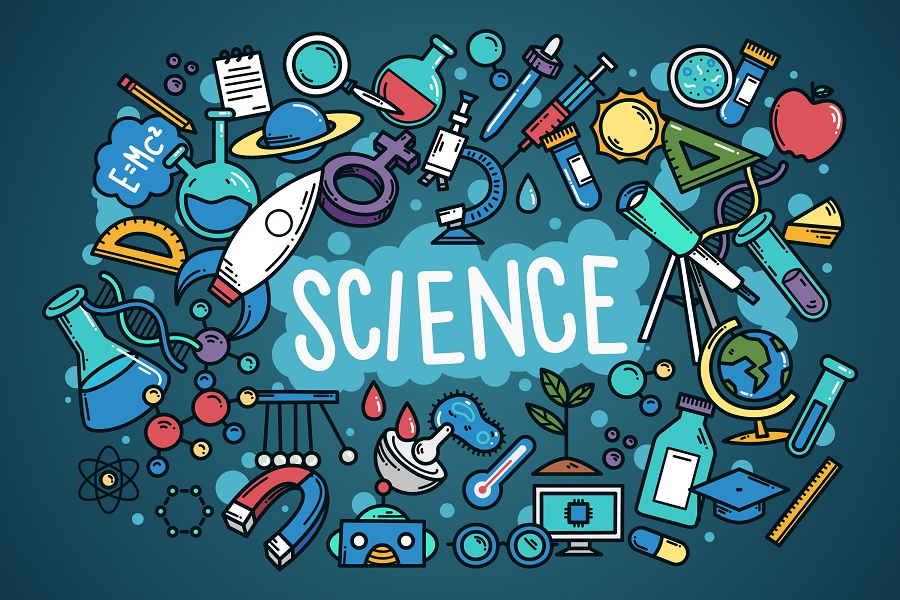

Ciencia Para todos
Introduccion a las ciencias
Grandes cientificos de la historia
Tendremos una lista de los principales colaboradores y pensadores de la historia de las ciencias que revolucionaron el pensamiento
del ser humano, creando un gran progreso tecnologico, entre los grandes cientificos tenemos:
Albert Einstein
Considerado por toda la comunidad científica como el mayor científico del siglo XX y uno de los más relevantes de toda la historia.
Premio Nobel de física en 1921, la teoría de la relatividad se considera uno de os avances más grandes que el hombre a obtenido a lo largo de los años.
Aunque fue uno de los artífices que fundamento la teoría de la bomba atómica, siempre se le ha considerado un científico amante de la paz mundial
Marie Curie
Marie Curie es, sin lugar a dudas, la mujer científica más relevante.
Una de las pioneras en estudios relacionados con la radioactividad, el descubrimiento del polonio y el radio, fue la primera mujer que dio clase
en la Universidad de París. Logró, entre otras muchas distinciones, dos premios Nobel: primero en física y después en química. Sus propios experimentos, exponiéndose
a la radiación, mermaron su salud durante años, hasta acabar muriendo.
Charles Darwin
El campo de la biología le debe mucho a Charles Darwin. Conocido por su teoría de la evolución, siguen siendo las bases de la biología moderna,
gracias a la publicación de una de las obras más relevantes del mundo: ‘El origen de las especies’.
Murió en Kent, Inglaterra, el 19 de abril de 1882, y tuvo un funeral de Estado en la Abadía de Westminster, como homenaje nacional por su contribución a la ciencia.
Nicolas Copernico
El astrónomo más importante de la historia junto a Galileo Galilei. Ambos, sentaron las bases de la ciencia y de una revolución en estos campos sin precedentes.
La teoría heliocéntrica de Copérnico cambió la visión y la concepción del mundo para siempre.
Stephen Hawking
El último de los grandes científicos y el famoso de la era moderna junto a Einstein. Hawking fue un elevado científico en el campo de la física, el universo y la relatividad,
a pesar de sufrir esclerosis lateral amiotrófica, que le impedían comunicarse con normalidad y moverse de una silla de ruedas.
Muchas de las formulaciones modernas sobre el origen del universo se las debemos a Stephen Hawking.
Isaac Newton
Sin duda alguna uno de los más importantes científicos de la historia de la humanidad. Su aportación es fundamental en campos como las matemáticas (cálculo), la óptica (teoría de la luz)
y la mecánica (leyes del movimiento y gravitación universal).
Nació el 25 de diciembre de 1642, en Woolsthorpe, Lincolnshire, Inglaterra.
Murió el 20 de marzo de 1727, en Cambridge, Cambridgeshire, Inglaterra.
Galileo Galilei
Nació en la ciudad de Pisa, siendo el primogénito de Vicenzo Galilei y Giuilia Ammannati. Su padre era músico, aunque una serie de dificultades económicas le obligaron a dedicarse al comercio.
No obstante, fue un hombre de gran cultura y buen intérprete, compositor y teórico de la música, lo cual influyó en Galileo que fue también amante de esta disciplina.
Es generalmente conocido por el juicio al que fue sometido, por Iglesia Católica, por defender el sistema heliocéntrico frente al sistema geocéntrico.
La mayor contribución de este gran científico a la ciencia fue la introducción del método experimental, que supuso toda una revolución científica y sentó las bases de la ciencia moderna.
Nació el 15 de febrero de 1564, en P1isa, Italia. Murió el 8 de enero de 1642, en en Arcetri, Florencia, Italia.
Ramas Importantes de las Ciencias
Identificacion de las principales ramas de las ciencias, como la biologia, quimica, fisica, matematicas,astrofisica,etc
Biologia:
Sabemos que la bilogia es la ciencia natural que estudia todo lo relacionado con la vida y lo orgánico, incluyendo los procesos, sistemas, funciones, mecanismos u otros caracteres biológicos